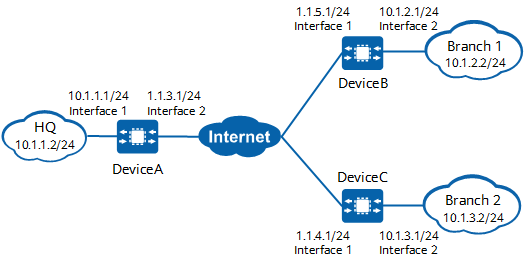

Example for Establishing an IPsec Tunnel in a NAT Scenario (NAT Is Performed by Each Branch's Gateway)
Networking Requirements
DeviceB connects branch 1 to the Internet, and DeviceC connects branch 2 to the Internet.
There are reachable routes between DeviceA and DeviceB, and between DeviceA and DeviceC.
DeviceA is the NAT gateway of the HQ, while DeviceB and DeviceC are the NAT gateways of branch 1 and branch 2, respectively.
Employees at the branches need to access the servers at the HQ. The information obtained from the servers is confidential and needs to be encrypted for secure transmission over the Internet through an IPsec tunnel. Data flows destined for the Internet require NAT, but data flows passing through the IPsec tunnel do not. Therefore, distinguish the data flows when configuring NAT.

In this example, interface 1 and interface 2 represent 10GE 0/0/1 and 10GE 0/0/2, respectively.

Item |
Data |
|---|---|
DeviceA |
Interface: 10GE 0/0/1 IP address: 10.1.1.1/24 |
Interface: 10GE 0/0/2 IP address: 1.1.3.1/24 |
|
IPsec configuration Authentication type: pre-shared key PSK: YsHsjx_202206 NAT traversal: enabled |
|
NAT configuration |
|
DeviceB |
Interface: 10GE 0/0/1 IP address: 1.1.5.1/24 |
Interface: 10GE 0/0/2 IP address: 10.1.2.1/24 |
|
IPsec configuration Remote address: 1.1.3.1 Authentication type: pre-shared key PSK: YsHsjx_202206 Local ID type: IP address Remote ID type: any NAT traversal: enabled |
|
NAT configuration |
|
DeviceC |
Interface: 10GE 0/0/1 IP address: 1.1.4.1/24 |
Interface: 10GE 0/0/2 IP address: 10.1.3.1/24 |
|
IPsec configuration Remote address: 1.1.3.1 Authentication type: pre-shared key PSK: YsHsjx_202206 Local ID type: IP address Remote ID type: any NAT traversal: enabled |
|
NAT configuration |
Configuration Roadmap
The tunnel negotiation parameter settings on devices at both ends of a tunnel must be the same.
This example uses default security algorithms of IPsec.
For security purposes, you are advised not to use the weak security algorithm or weak security protocol of this feature. If you must use such weak security algorithm or protocol, run the install feature-software WEAKEA command to install the weak security algorithm or protocol feature package WEAKEA.
- Configure interfaces.
- Configure static routes to divert tunnel negotiation packets and encrypted data packets transmitted through the tunnel.
- Configure an IPsec policy and apply an IPsec policy group to an interface. Template IPsec policies need to be configured on DeviceA at the HQ, and ISAKMP IPsec policies need to be configured on DeviceB and DeviceC at the branches.
- Configure source NAT. Data flows destined for the Internet require NAT, but data flows passing through the IPsec tunnel do not. Therefore, you need to configure different actions in a NAT policy to distinguish the data flows.
Procedure
- Configure public and private network interfaces on DeviceA.
# Configure the private network interface 10GE 0/0/1.
<HUAWEI> system-view [HUAWEI] sysname DeviceA [DeviceA] interface 10ge 0/0/1 [DeviceA-10GE0/0/1] undo portswitch [DeviceA-10GE0/0/1] ip address 10.1.1.1 24 [DeviceA-10GE0/0/1] quit
# Configure the public network interface 10GE 0/0/2.
[DeviceA] interface 10ge 0/0/2 [DeviceA-10GE0/0/2] undo portswitch [DeviceA-10GE0/0/2] ip address 1.1.3.1 24 [DeviceA-10GE0/0/2] nat enable [DeviceA-10GE0/0/2] quit
- Configure a default static route on DeviceA to divert tunnel negotiation packets and encrypted data packets transmitted through the tunnel.
Assume that the next-hop IP address of the route from DeviceA to the Internet is 1.1.3.254.
[DeviceA] ip route-static 0.0.0.0 0.0.0.0 1.1.3.254
- Configure a template IPsec policy on DeviceA and apply an IPsec policy group to 10GE 0/0/2.
- Configure an IKE peer.
[DeviceA] ike peer b [DeviceA-ike-peer-b] ike-proposal 10 [DeviceA-ike-peer-b] pre-shared-key YsHsjx_202206 [DeviceA-ike-peer-b] nat traversal [DeviceA-ike-peer-b] quit
By default, NAT traversal is enabled. If NAT traversal is disabled, run the nat traversal command to enable it again.
- Configure an IKE peer.
- Configure NAT on DeviceA.
[DeviceA] nat-policy [DeviceA-policy-nat] rule name policy_nat1 [DeviceA-policy-nat-rule-policy_nat1] source-address 10.1.1.0 24 [DeviceA-policy-nat-rule-policy_nat1] destination-address 10.1.2.0 24 [DeviceA-policy-nat-rule-policy_nat1] destination-address 10.1.3.0 24 [DeviceA-policy-nat-rule-policy_nat1] action no-nat [DeviceA-policy-nat-rule-policy_nat1] quit
[DeviceA-policy-nat] rule name policy_nat2 [DeviceA-policy-nat-rule-policy_nat2] source-address 10.1.1.0 24 [DeviceA-policy-nat-rule-policy_nat2] action source-nat easy-ip [DeviceA-policy-nat-rule-policy_nat2] quit [DeviceA-policy-nat] quit
- Configure public and private network interfaces on DeviceB.
# Configure the public network interface 10GE 0/0/1.
<HUAWEI> system-view [HUAWEI] sysname DeviceB [DeviceB] interface 10ge 0/0/1 [DeviceB-10GE0/0/1] undo portswitch [DeviceB-10GE0/0/1] ip address 1.1.5.1 24 [DeviceB-10GE0/0/1] nat enable [DeviceB-10GE0/0/1] quit
# Configure the private network interface 10GE 0/0/2.
[DeviceB] interface 10ge 0/0/2 [DeviceB-10GE0/0/2] undo portswitch [DeviceB-10GE0/0/2] ip address 10.1.2.1 24 [DeviceB-10GE0/0/2] quit
- Configure a default static route on DeviceB to divert tunnel negotiation packets and encrypted data packets transmitted through the tunnel.
Assume that the next-hop IP address of the route from DeviceB to the Internet is 1.1.5.254.
[DeviceB] ip route-static 0.0.0.0 0.0.0.0 1.1.5.254
- Configure an ISAKMP IPsec policy on DeviceB and apply an IPsec policy group to 10GE 0/0/1.
- Configure an IKE peer.
[DeviceB] ike peer a [DeviceB-ike-peer-a] ike-proposal 10 [DeviceB-ike-peer-a] remote-address 1.1.3.1 [DeviceB-ike-peer-a] pre-shared-key YsHsjx_202206 [DeviceB-ike-peer-a] nat traversal [DeviceB-ike-peer-a] quit
By default, NAT traversal is enabled. If NAT traversal is disabled, run the nat traversal command to enable it again.
- Configure an IPsec policy.
[DeviceB] ipsec policy map1 10 isakmp [DeviceB-ipsec-policy-isakmp-map1-10] security acl 3000 [DeviceB-ipsec-policy-isakmp-map1-10] proposal tran1 [DeviceB-ipsec-policy-isakmp-map1-10] ike-peer a [DeviceB-ipsec-policy-isakmp-map1-10] sa trigger-mode auto [DeviceB-ipsec-policy-isakmp-map1-10] quit
By default, the negotiation for IPsec tunnel establishment is triggered by traffic. To enable automatic negotiation for IPsec tunnel establishment, run the sa trigger-mode auto command.
- Configure an IKE peer.
- Configure NAT on DeviceB.
[DeviceB] nat-policy [DeviceB-policy-nat] rule name policy_nat1 [DeviceB-policy-nat-rule-policy_nat1] source-address 10.1.2.0 24 [DeviceB-policy-nat-rule-policy_nat1] destination-address 10.1.1.0 24 [DeviceB-policy-nat-rule-policy_nat1] destination-address 10.1.3.0 24 [DeviceB-policy-nat-rule-policy_nat1] action no-nat [DeviceB-policy-nat-rule-policy_nat1] quit
[DeviceB-policy-nat] rule name policy_nat2 [DeviceB-policy-nat-rule-policy_nat2] source-address 10.1.2.0 24 [DeviceB-policy-nat-rule-policy_nat2] action source-nat easy-ip [DeviceB-policy-nat-rule-policy_nat2] quit [DeviceB-policy-nat] quit
- Configure public and private network interfaces on DeviceC.
# Configure the public network interface 10GE 0/0/1.
<HUAWEI> system-view [HUAWEI] sysname DeviceC [DeviceC] interface 10ge 0/0/1 [DeviceC-10GE0/0/1] undo portswitch [DeviceC-10GE0/0/1] ip address 1.1.4.1 24 [DeviceC-10GE0/0/1] nat enable [DeviceC-10GE0/0/1] quit
# Configure the private network interface 10GE 0/0/2.
[DeviceC] interface 10ge 0/0/2 [DeviceC-10GE0/0/2] undo portswitch [DeviceC-10GE0/0/2] ip address 10.1.3.1 24 [DeviceC-10GE0/0/2] quit
- Configure a default static route on DeviceC to divert tunnel negotiation packets and encrypted data packets transmitted through the tunnel.
Assume that the next-hop IP address of the route from DeviceC to the Internet is 1.1.4.254.
[DeviceC] ip route-static 0.0.0.0 0.0.0.0 1.1.4.254
- Configure an ISAKMP IPsec policy on DeviceC and apply an IPsec policy group to 10GE 0/0/1.
- Configure an IKE peer.
[DeviceC] ike peer a [DeviceC-ike-peer-a] ike-proposal 10 [DeviceC-ike-peer-a] remote-address 1.1.3.1 [DeviceC-ike-peer-a] pre-shared-key YsHsjx_202206 [DeviceC-ike-peer-a] nat traversal [DeviceC-ike-peer-a] quit
By default, NAT traversal is enabled. If NAT traversal is disabled, run the nat traversal command to enable it again.
- Configure an IPsec policy.
[DeviceC] ipsec policy map1 10 isakmp [DeviceC-ipsec-policy-isakmp-map1-10] security acl 3000 [DeviceC-ipsec-policy-isakmp-map1-10] proposal tran1 [DeviceC-ipsec-policy-isakmp-map1-10] ike-peer a [DeviceC-ipsec-policy-isakmp-map1-10] sa trigger-mode auto [DeviceC-ipsec-policy-isakmp-map1-10] quit
By default, the negotiation for IPsec tunnel establishment is triggered by traffic. To enable automatic negotiation for IPsec tunnel establishment, run the sa trigger-mode auto command.
- Configure an IKE peer.
- Configure NAT on DeviceC.
[DeviceC] nat-policy [DeviceC-policy-nat] rule name policy_nat1 [DeviceC-policy-nat-rule-policy_nat1] source-address 10.1.3.0 24 [DeviceC-policy-nat-rule-policy_nat1] destination-address 10.1.2.0 24 [DeviceC-policy-nat-rule-policy_nat1] destination-address 10.1.1.0 24 [DeviceC-policy-nat-rule-policy_nat1] action no-nat [DeviceC-policy-nat-rule-policy_nat1] quit
[DeviceC-policy-nat] rule name policy_nat2 [DeviceC-policy-nat-rule-policy_nat2] source-address 10.1.3.0 24 [DeviceC-policy-nat-rule-policy_nat2] action source-nat easy-ip [DeviceC-policy-nat-rule-policy_nat2] quit [DeviceC-policy-nat] quit
Verifying the Configuration
- After the configuration is complete, employees at the HQ and branches can access the Internet at any time. Check for the session entries with source addresses as the private addresses of intranet PCs. The following assumes that a PC on the HQ intranet accesses IP address 3.3.3.3. If a session entry with the source address as the private addresses of the PC is found and the post-NAT IP address is the public IP address of the public network interface, the NAT policy has been configured successfully.
<DeviceA> display session all verbose Session Table Information: Protocol : 6(TCP) SrcAddr Port Vpn : 10.1.1.3 2474 DestAddr Port Vpn : 3.3.3.3 80 Time To Live : 60s NAT Info New SrcAddr : 1.1.3.1 New SrcPort : 3761 New DestAddr : - New DestPort : - Total : 1 - View IKE SAs and IPsec SAs on DeviceB and DeviceC at the branches. The following example uses the command output on DeviceB, which shows that IKE SAs and IPsec SAs have been established successfully.
<DeviceB> display ike sa Total number of IKE SA in all CPU : 2 Total number of phase 1 SA in all CPU : 1 Total number of phase 2 SA in all CPU : 1 Flag Description: RD--READY ST--STAYALIVE RL--REPLACED FD--FADING TO--TIMEOUT HRT--HEARTBEAT LKG--LAST KNOWN GOOD SEQ NO. BCK--BACKED UP M--ACTIVE S--STANDBY A--ALONE NEG--NEGOTIATING Slot 0, cpu 0 IKE SA information : Number of IKE SA : 2, number of IKE SA1: 1, number of IKE SA2: 1 ------------------------------------------------------------------------------------ Conn-ID Peer VPN Flag(s) Phase RemoteType RemoteID ------------------------------------------------------------------------------------ 16782416 1.1.3.1/500 RD|ST|A v2:2 IP 1.1.3.1 16782415 1.1.3.1/500 RD|ST|A v2:1 IP 1.1.3.1 ------------------------------------------------------------------------------------
<DeviceB> display ipsec sa brief Slot 0, cpu 0 IPSec SA information: Src address Dst address SPI VPN Protocol Algorithm ------------------------------------------------------------------------------- 1.1.3.1 1.1.5.1 16423687 ESP E:AES-256-GCM-128 1.1.5.1 1.1.3.1 274624861 ESP E:AES-256-GCM-128 Number of IPSec SA : 2 ------------------------------------------------------------------------------- Total number of IPSec SA in all CPU : 2
Configuration Scripts
- DeviceA
# sysname DeviceA # ipsec proposal tran1 esp authentication-algorithm sha2-256 esp encryption-algorithm aes-256-gcm-128 # ike proposal 10 encryption-algorithm aes-gcm-256 dh group14 authentication-algorithm sha2-256 authentication-method pre-share integrity-algorithm hmac-sha2-256 prf hmac-sha2-256 # ike peer b pre-shared-key %@%@'OMi3SPl%@TJdx5uDE(44*I^%@%@ ike-proposal 10 # ipsec policy-template map_temp 1 proposal tran1 ike-peer b # ipsec policy map1 10 isakmp template map_temp # interface 10GE0/0/1 ip address 10.1.1.1 255.255.255.0 # interface 10GE0/0/2 ip address 1.1.3.1 255.255.255.0 nat enable ipsec policy map1 # ip route-static 0.0.0.0 0.0.0.0 1.1.3.254 # nat-policy rule name policy_nat1 source-address 10.1.1.0 mask 255.255.255.0 destination-address 10.1.2.0 mask 255.255.255.0 destination-address 10.1.3.0 mask 255.255.255.0 action no-nat rule name policy_nat2 source-address 10.1.1.0 mask 255.255.255.0 action source-nat easy-ip # return
- DeviceB
# sysname DeviceB # acl number 3000 rule 5 permit ip source 10.1.2.0 0.0.0.255 destination 10.1.1.0 0.0.0.255 # ipsec proposal tran1 esp authentication-algorithm sha2-256 esp encryption-algorithm aes-256-gcm-128 # ike proposal 10 encryption-algorithm aes-gcm-256 dh group14 authentication-algorithm sha2-256 authentication-method pre-share integrity-algorithm hmac-sha2-256 prf hmac-sha2-256 # ike peer a pre-shared-key %@%@W[QD:1tV\'f"!1W&yrX6v$B>%@%@ ike-proposal 10 remote-address 1.1.3.1 # ipsec policy map1 10 isakmp security acl 3000 ike-peer a sa trigger-mode auto proposal tran1 # interface 10GE0/0/2 ip address 10.1.2.1 255.255.255.0 # interface 10GE0/0/1 ip address 1.1.5.1 255.255.255.0 nat enable ipsec policy map1 # ip route-static 0.0.0.0 0.0.0.0 1.1.5.254 # nat-policy rule name policy_nat1 source-address 10.1.2.0 mask 255.255.255.0 destination-address 10.1.1.0 mask 255.255.255.0 destination-address 10.1.3.0 mask 255.255.255.0 action no-nat rule name policy_nat2 source-address 10.1.2.0 mask 255.255.255.0 action source-nat easy-ip # return
- DeviceC
# sysname DeviceC # acl number 3000 rule 5 permit ip source 10.1.3.0 0.0.0.255 destination 10.1.1.0 0.0.0.255 # ipsec proposal tran1 esp authentication-algorithm sha2-256 esp encryption-algorithm aes-256-gcm-128 # ike proposal 10 encryption-algorithm aes-gcm-256 dh group14 authentication-algorithm sha2-256 authentication-method pre-share integrity-algorithm hmac-sha2-256 prf hmac-sha2-256 # ike peer a pre-shared-key %@%@W[QD:1tV\'f"!1W&yrX6v$B>%@%@ ike-proposal 10 remote-address 1.1.3.1 # ipsec policy map1 10 isakmp security acl 3000 ike-peer a sa trigger-mode auto proposal tran1 # interface 10GE0/0/2 ip address 10.1.3.1 255.255.255.0 # interface 10GE0/0/1 ip address 1.1.4.1 255.255.255.0 nat enable ipsec policy map1 # ip route-static 0.0.0.0 0.0.0.0 1.1.4.254 nat-policy rule name policy_nat1 source-address 10.1.3.0 mask 255.255.255.0 destination-address 10.1.1.0 mask 255.255.255.0 destination-address 10.1.2.0 mask 255.255.255.0 action no-nat rule name policy_nat2 source-address 10.1.3.0 mask 255.255.255.0 action source-nat easy-ip # return